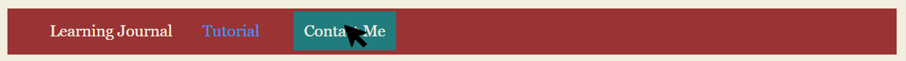

Three web pages were created inside the CI435 folder:
Learning Journal (home page)
Tutorial
Contact
On each page I allowed there only to be two links in the navigation section, which listed all three pages. The unlinked item on the list is the name of the current web page because it prevents the user to click on the same again but also indicating where on the navigation bar the web page is.
Using the <a> tags to allow the user to click on a piece of text, which links them to another web page (defined in <href> inside the tag).
I created two lists. One ordered and the other unordered using <ol> and <ul> tags respectively. This list is ordered because I am listing steps of what I did in chronological order.
Each page has the title of the website in the Header 1 tag/font and Header 2 tag displayed the web page's name below. The title can also be viewed on the tab bar at the top of the browser. I added this title in the title tag inside the head tag.
Each page has the title of the website in the Header 1 tag/font and Header 2 tag displayed the web page's name below. The title can also be viewed on the tab bar at the top of the browser. I added this title in the title tag inside the head tag.
'images' and 'css' are directories (folders) that will contain CCS scripts (in 'css') to define the layout and format of the website and images (in 'images') to be stored in one place in order to keep all the different files categorised in different directories.
This web page is written in HTML5 because it is the up to date version of this programming language. Most websites have the standards that are set for attributes and elements, which are included in this version. [5]
The W3C Markup Validation Service is a useful tool where copied the URL into its search bar and it analysed my HTML code. The syntax analysis tool returned all the errors I had made in my code and suggests solutions in order to fix them. [1]
Week 2: Marking up content in the Learning Journal
Published on
What I Have Accomplished
Surrounding the tag names mentioned with the code tag to highlight the name of tag in order to distinguish it from paragraph (normal) text.
Recognise the difference between absolute and relative links.
I've created anchors, which are linked text that links the user to another part of the same page. The links below the heading "Weekly Posts" are an example of anchors where each link contains a # before the name of the ID defined in each Heading 3 tag. When the link is clicked on, the page automatically scrolls to the element with the particular id.
A <figure> tag is for an image to be placed into and its sub-tag, <figcaption>, provides the description of the image element above.
I placed the time tag in each Weekly Post where the date published is given. This is used for search engines to easily read this article's date and so they can relevance it in its results.
Research
Upon further research, I discovered that self-contained tag where the header and footer tags can be used inside to set the content inside <article> as its own document. [6]
Every element contains an opening tag and a closing tag where its content is sandwiched in between. The opening tag has the name of the tag and the closing tag is the same apart from the forward slash before the name. The length of the element is determined by its content (e.g. length of the text inside). [9]
Block elements are sections of a website that start on a new line. Their width takes up the space of its parent element. Examples include <p> (paragraph), <header> and <footer>. [7]
Contained inside these elements are inline elements. <strong> and <small> are examples of elements that do not start a new line on a web page. The maximum width of the element equals the width of its parent block line element and they usually change the style of the text (e.g. <strong> increases the thickness of the text). [7]
Absolute links are web paths to an external website. An example in HTML code would be <a href="http://am2012.brighton.domains/ci435/index.html">Text to click on here</a>. These full URLs can be found in the reference list. [8]
Relative paths are internal links where the URL begins from the next directory from the current HTML file. They are found in the navigation menu. In HTML, one would create a relative path by establishing an ID to the element that the link would go to (e.g. <p id="elementName">Text<p>). The link would contain a # before the name of the element's ID as seen here: <a href="#elementName">Text to click on here</a>. [4]
I created a table. The <table> tag contains sub-tags:
<tr> - the first sub-tag used, which establishes the next row.
<td> - contains, under <tr>, the content of the next table cell.
<th> - exactly the same as <td> except it alters the font inside as a heading style and it's used as the first row.
The example below has the tag of <blockquote>, which indents the content inside. The link below uses <cite>, which changes the style of the content to italics.
The HTML <blockquote> Element (or HTML Block Quotation Element) indicates that the enclosed text is an extended quotation.
As well as text, images can also be a link to another URL. An <a> opening tag is written where the property of href has the value of the URL. target="_blank" opens up a new tab in the browser, which then executes URL. Before closing the tag, the img element is produced with the relative link to the image file defined in src. alt has text stored, which describes the picture, to display if the image cannot be located by the browser.
<figure> creates a line is below to above content, centres all content inside and indents them. If the image can't load on the screen, "Logo of HTML 5" will appear in its place, which is defined inside <img> as the alt attribute.
<link> references code from an external document, such as a JavaScript or CSS file. This allows a resource to be linked to many HTML documents that use this tag.
<blockquote> creates a new line and indents it to display isolated text in its area to display it as quote.
<video> embeds a video file, which is stored in a directory on the web site, on the web page. This tag also has a media player to provide playback for the user.
<iframe> embeds another HTML page in the area of the tag.
<details> displays a toggle button that reveals the specified content (in between the tags) when clicked on by the user. It disappears when clicks it again.
<center> horizontally aligns the content to the centre of the parent block element.
<cite> is used to reference the above quote inside <blockquote>. The content inside could be a link, name of a play/book, the author and the date published. It can also be used in the <q> tag. [11]
<header> - the top part of the page, which usually displays the website's logo, title and heading. This content, apart from the heading, stays constant on every page of the site.
<nav> - a navigation bar to contain the links to the main pages of the website. Text, articles, images and videos that show up only on this page go inside this tag.
<main> - the main content will have a large area of unique content for the page.
<aside> - adverts, quotes or other links go inside here as a small sidebar to the main content. If the main content is an article, this element would be used as an information area giving the name the author and the date it was published or having links to other similar articles.
<footer> - the bottom part of the page, which usually displays the website's copyright information and extra information that was not important enough for the header element. Like the header, the content here also normally stays the same on every web page on this site.
Screen readers is a program that the visually impaired use to navigate and read a website. The program looks at the HTML and finds the main tags (header, footer etc.) and asks the user, which section to use. For example, if they want to go to another page on the site, the program can take them to <nav> where all the hyperlinks will be given as options to select, which are read by the program. When reading text, only the content inside the tag will be read until the close tag is encountered.[13]
From https://necolas.github.io/normalize.css/, I uploaded the file, normalise.css, to my web server under the directory called 'css'. On each page of this website, a <link> tag was placed inside <header>. The <link> element defined the file type as rel="stylesheet" and the CSS file name, normalise.css. This element pulls the code from the file and utilises it in this HTML page. All the styles defined in normilised.css are applied to the elements inside index.html and the other pages.
The file mentioned above was to define the elements to the standard form of any website in order to ensure that it is user friendly. This is standard across most websites. However, 'stylesheet.css' is the file with my written changes to the layout and format of the website. It is linked to HTML pages the same way as 'normalise.css' is.
The body element was styled by setting the attributes inside the body selector (in 'stylesheet.css'):
background-color was set to #F0F0F0, which is a grey shade in hexadecimal. English written colours can be accepted but hexadecimal gives a more accurate measurement on the tone of the colours in order to provide a specific shade.
font-family defines the fonts of the text within the elements. This is given as a list in order of priority to be displayed. If the web browser cannot display the font (because it has record of it), then it will attempt to display the next in the list.
color sets the text to #333, which is shorthand for #333333 (a shade of black with hint of yellow).
font-size makes default for all text to be 16 pixels high.
line-height gives 20px of space between each line of content.
I styled an ID element called wrapper. In index.html, this ID is placed in a <div> tag. In stylesheet.css, the selector begins with a '#' before giving the name of the ID in order to indicate that the selector is an ID. The attributes defined were:
max-width means that the width of the entire element cannot expand 1000px.
margin-right can vary any size, where the content's width ends.
margin-left can vary any size, where the content's width starts.
background-color set to white.
padding-right is the distance between the border of the element and the content on the right side.
padding-left is the distance between the border of the element and the content on the left side.
Links can also be re-styled in CSS. Four states of <a> are established in the stylesheet.css:
The multiple selectors a:link, a:visited, a:active (normal state, once it's been clicked on and whilst being clicked on respectively) all have their colour set to #0090D2, which is a shade of light blue.
a:hover is uniquely defined with its colour as #0063A6 (a slightly darker blue) and no decoration of text, which means that the link will not be underlined whilst the mouse is hovering over the element.
A class attribute was defined similarly to an ID. In CSS, instead of typing a '#' at the start of the selector, a '.' is given. The 'menu' attribute was placed in <nav>. The CSS selectors from 'menu':
.menu li alters the list tags (<li>) inside the menu class. The style type is set to none so that no bullet points can be shown, the font size is set to 18px, no left margin and a 20px distance between the elements and the bottom margin.
.menu a changes the look of the links in the menu class, such as redefining the colour, background colour, margin, border and giving no text decoration. The result shows white boxes with a blue outline and blue text.
.menu a:hover sets the look of the links, when hovered over, in the menu class. The alterations are a change in background colour (to blue) and colour (to white).
For each <article>, the <header> section has a class named 'post' and it is defined in CSS with attributes setting length the top and bottom margins as 2 pixels and a background colour of #CCC (grey).
Errors are fixed in numbered order of the image above:
I added an alt attribute and typed in text describing the image.
Same fix for solution 1 above.
Even though attribute does work, the standard rules need border to be defined in CSS.
The tag was changed to <li> because the content inside is an item in a list.
The two main differences made here are the font and the background colour. The grey colour is subtle but more decorative and the bolder text improves readability by giving it a grander presence.
Inside the CSS files are selectors that target HTML tags, classes or ID's in order to style them. When the selector is a tag, all elements under the specified tag are targeted. [15]
Properties are then defined inside the selector. Examples of these attributes include colour, display, border and font-size. [16]
As well as normal selectors, there are pseudo selectors: [15]
Pseudo classes (e.g. a:visited) specifies the state of the element to target and all properties inside are used when the element is in that defined state.
Pseudo elements are objects that are not in the HTML syntax. For example, p::first-line will affect only the first line of every paragraph content.
CSS can be used to make changes to the font, size, colour and spacing of the HTML content. You can also lay out the columns and add animations. [17]
Inside a selector are declarations and each one is the sum of a property and its property value. For example, color: blue;[18]
There are two types of CSS properties that styles text: [19]
Font style properties alter the font size, whether it is bold, italic or underlined and its colour. E.g. font-family and font-size, color.
Text layout styles are properties that manipulating the spacing, alignment within the element and gaps between the letters. E.g. margin-left, padding-right and align.
Type selectors target tag names that affect all the elements with those tags. Class selectors select elements with an applied class and ID selectors target elements with IDs. A universal selector is the most different because the selector is a '*' that targets all elements in the HTML document. [20]
Class selectors can be targeted on specific tags. This selector is written as tagType.className. p.eat will only affect the paragraph tags (<p>) with the class of eat. Two classes can also be selected, and it's written as class1.class2, where the classes class1 and class2 are affected. [20]
CSS files are laid out as cascading selectors in order of the parent elements down to the child elements. Each element inherits properties already defined in its parent's elements. [21]
font-family inside the body selector was rewritten as Georgia, "Times New Roman", Times, serif with the second font having speech marks in order to contain the name so that the browser can read the spaces as part of the one font. They were changed because they fonts more suitable for reading. Just like before, the most preferred font is ordered first, each font is separated by commas, they have a default size of 16px.
A <link> element was appended in the <head> section that adds a CSS script (https://fonts.googleapis.com/css?family=Strait) to this HTML page. 'Strait' is a Google-made specific font that needs an API in order to be used by websites. The CSS file retrieves the font from Google's free online font library.
The selectors of h1, h2 and h3 (Heading 1, Heading 2 and Heading 3) define their fonts as 'Strait', sans-serif as well as the font sizes, which are largest in order of h1, h2 and h3 in order to highlight Heading 1's prime importance.
The paragraph tag's (<p>) selector, in CSS, alters the font's size to 1.25rem (1.25 times the size of the root element, which would be <body>[14]), set line-height at 1.5 (1.5 of 1.25 rem), defines the margin spaces (in clockwise order of above, right, below and left), expands the indent (text-indent) by 2em (2 times the size of the font of this element).
I tested a section of text by dropping its first capital letter after the opening tag using a class called "dropcap". Floating the element left allows the text to wrap around the first letter and increasing the margins provide better readability for the user to distinguish between the letters. It was designed in a class called "dropcap" and this pseudo element was a sub-selector of <p> so that only paragraph font(s) inside the class can initiate this change. font-size increases the font by 5 times, the colour is changed, the margins increase (right and bottom) and the element is floating left.
I attempted aligning the paragraph fonts to the right of the screen, but it created a huge gap when inside a list item. It is now corrected to align left.
The 'fltlt' class is created for images to float left and move the right margin for the text wrap around it. The class is always established in a div element. 'fltrt' is the class that performs the opposite (floating right). In order to ensure these classes don't affect the elements after, 'clear' was written. This class is added to the next element after the floated image.
Most of my text was in list format and the font size looked too small and it wouldn't be accessible for the visually impaired. Some items in the lists had inline paragraph tags, which had larger font sizes. The text changing size in one list item prevented consistency with the layout of web page. To fix these problems I changed all the main lists after the Heading 4's to paragraphs (which had also increased the font size) and kept sub-lists that were in the original lists. To make the remaining lists readable, I changed the CSS font-size in the li selector to 1.2rem.
Week 6: Making the Learning Journal page responsive
Published on
What I Have Accomplished
In the <head> section, I added a meta element called a 'viewport' where all the content on this page matches the width of the device's screen. Now the website can be viewed on almost all devices due to the adjustments of the elements' scale and width. The same was added on the other pages to maintain consistency.
In order to layout the page as a grid, all the main elements need to be unique. I added a class to the <header> that contains the Website's title and the current page's title. The navigation tag with the main links is also assigned a class.
The headings, h1, h2 and h3, all now align in the centre of the page because I included the property of text-align to the specific selectors.
The img selector was given the attributes:
max-width prevents any image from exceeding 70% of the width of the parent element's size.
height is set to automatic, where the image's height, will adjust depending on the width in order to maintain the ratio of the height and width.
A black border is established as a solid line that spans 1px outwards. The border is useful for the user to identify that the element is an image.
For the menu to align centre on the page, margin-left was changed to 15% in the selector of the 'menu' classes list items. However, this alteration did not work for the mobile version so instead, the float property was applied to the mobile widths.
Two @media selectors were produced in stylesheet.css for providing changes on devices with desktop and tablet screens. The code outside the media targets are default and mobile properties.
A grid was created inside the div element with the ID of 'wrapper' and the default arrangement of the main elements were stacked underneath each other. Using @media, screens with a minimum of 50em are laid out in two columns (for tablets) whereas 60em or bigger screens have three columns (for desktops).
Unfortunately, the elements' widths stopped adjusting at two Android screens wide. I tried making the default 'wrapper' selector the desktop three column whilst the element changes depending on the maximum width rather than minimum. Unfortunately, the alterations made no difference. Using the inspection tool on Chrome, I worked out that display: grid; did not allow the content inside the wrapper match its width. However, removing this line of code would affect the grid-template-areas. So, display: grid was moved to the 'wrapper' with the tablet version. No grid areas were defined in the default 'wrapper' selector (mobile version) and so the mobile will display all content as one column.
Originally, the menu links were stacked vertically. In CSS, I established the line of code, display: block, inside the selectors .menu li and .menu a so that the content and the link spans the width of the 'wrapper' element.
Another 'menu' selector was added that targets link elements when they are clicked on (state is called 'focus'). The padding property's four values were changed to expand the size of the elements.
The 'menu' selectors for <a> and <a> are added to the tablet changes (@media). The display property aligns the menu links horizontally. The padding is set for the 'banner' (to align to the centre of the page) and 'menu' (to provide space between the links and the elements below.
When using the <code> tag, the content inside does not keep everything on one line in a paragraph. In CSS, I added, in the 'code' selector, the property, word-wrap: break-word. This attribute breaks a string when it exceeds the end of the element and creates a newline to add in the rest of the characters. [22]
Using MobileTest.me (iPhone 5 emulator), I discovered links that exceed the width of the wrapper element, extend the width of the screen. To restore the width, I placed the same rule that is in the code selector in the a selector.
Errors are fixed in numbered order of the image above:
<!DOCTYPE html> was written as the first above the <html> element.
The attribute was removed in the table tag. There is only a property to align text in CSS so instead, in the <table> targetter, I added margin-left and margin-right to set both to auto in order to automatically align the table to the centre. [24]
The attribute was removed in the table tag and two new selectors were written in CSS, table and td. Both had properties of a dark border that spanned 1px. [23]
An image is yet to be added.
The ul opening and closing tags were removed as I had no longer any intention to make a list.
The end tag was replaced with </p> to match the type of tag that was opened outside the content.
An alt property was appended in the img tag to describe the image.
Same fix as the solution above.
ul was replaced as p.
Two <figcaption>'s were used inside one figure element. I separated them by closing off the first figure tag after the first figcaption closing tag and opening another figure element.
The solution above also fixed this problem.
The solution two lists above also fixed this problem.
An alt property was appended in the img tag to describe the image.
After reordering the articles in ascending order and shifting the ID's from the h1 elements to the article tags, I adapted the code from [25] to create a popup window for each weekly post:
Firstly, a link was created with the src to an anchor ID named, "week1-pop-up".
The ID is in the element below (a <div>), which also contains the class of 'overlay'.
Inside this element is the <article> of Week 1 and its content where I've placed a class, 'popup-window'.
In CSS, 'overlay' is selected with the properties:
position of the element is fixed in the centre of the screen no matter how far the page is scrolled.
overflow provides a scrollbar if the content exceeds the space of the element.
top, bottom, left, right establishes the distances from the edges of page from each side of the box element.
transition is a fade effect that lasts 1 second when the pop-up appears.
background colour of the element is white.
Initial visibility is hidden.
A second selector for overlay, where state is targeted in the URL, alters the visibility to reveal the box within the element.
The class of pop-up-window has defining attributes in CSS that codes the margins, padding, colour of the background and border. When its state is targeted (anchor link is clicked on), its opacity is true for the content to show.
The element with the class of 'close' in a 'pop-up-window' element is aligned using the top and right properties. The font-size is increased and is a blue colour but changes when hovered over.
Now that there is a list of links to show the content of each week, the Weekly Post links are no longer needed because barely any scrolling is required in order to find the next post. The Weekly Posts section is replaced with the newly made pop-up links.
The pop-ups on this page are never intrusive because they never shift the pre-existing content.
In the figure selector, I wrote a property (text-align) to centre all content inside, which will be the images. I did this so that two images beneath each other would look smarter on the page.
'fltlt' and 'fltrt' classes each have an appended property that adjusts the content's size to 60% of the viewport for there to be space for the description of the image(s).
figcaption's selector included the text-align property to align its text to the left because it left uneven gaps between the bullet/numbered points and the text when there are lists in this tag.
The <main> section contains the content with the headings, Weekly Posts and My Timetable. <aside>, where the research references are listed, is placed beside <main> in desktop and tablet views.
The 'posts' class now lays out the ID elements of week1, week2, week3 to week9 (in the same way it laid out the post1 to post6 areas), which are no longer listed in the 'wrapper' selector.
The design of the layouts for three different devices. The biggest difference will be that each version will have different columns: one for mobile; two for tablet; three for desktop. The wider the screen, the more columns of content there should be so that the full width of the viewport can utilised, which reduces the height so the user doesn't have the use the scrollbar as much.
The header and navigation/menu section will be static on every viewport size, whereas the links, underneath the headings of Weekly Posts and References, are arranged in columns.
Developer tools are allowing me to make temporary changes on any web page (in HTML, CSS and JS) in order to display those changes in the browser. This is useful because if I make a huge mistake that ruins the entire page, those changes won't be saved. I can also use the inspector tool to analyse any element's four layers (e.g. the margin).
Research
The viewport is the visible area of the page and it can now vary in size after the introduction of mobile and tablet devices. Setting the viewport to scale the content down to fit the screen avoided a phone user having to scroll sideways on a website designed for a desktop computer. [31]
53% of adults access the web via mobile phones. Of that percentage, 71% expect a page load as fast or faster than if they used a computer. [32]
A grid is 2D layout system that arranges content in rows and columns. It is a collection of horizontal lines in which blocks of content are placed. The gutters are the gaps between the rows/columns, which are set as measurement in CSS for grid-gap. [33]
grid-template-columns represents the fractions each column of the space in the container. Now, all my columns are set to 3fr. [33]
An @media selector in CSS is known as a media query, which contains a series of selectors and their properties to be implemented when the viewport is at certain size. This allows the site to adapt its content for different screen widths. For example, fonts can alter size or paragraphs can change their spacing. [34]
text-indent property was removed since my paragraphs are generally small and frequent, and it disturbed the look of the document.

The navigation menu separated the website's title and its content with a horizontal red block. Inside this block are the menu's links. Originally, they had a blue border with text and this style did not stylistically look part of the bar. So, I extended the length of every <a> element's border to be 12px. The background colour is red but changes to green when hovered over / clicked. Making these links (almost) fit the size of the menu bar allows them to look as if they belong there.
I created a testing area named "flexible_media_test.html" with the heading of 'Flexible media examples' and embedded CSS code using the <style> tag. The 'type' attribute is added in the tag to specify that the code below is CSS.
Using the Stripe Generator tool, an image was made, downloaded and embedded in the <header> of flexible_media_test.html with a CSS class that has the property to hide overflowing content. This means that the image crops itself when the viewport is minimised.
The same image was placed below the heading with CSS properties of width at 100% (filling the width of the viewport) and its max-width at 900px. When the viewport exceeds 900 pixels, the picture can no longer adjust its size to fill the screen.
An article section was made with an image and text below. In the CSS section, a selector for any <img> elements in an <article> float to the left of the screen in addition to a margin and some padding properties. A 'clear' class is written underneath, which works the same as what was defined in stylesheet.css.
In tutorial.html, an iframe element, which embeds a YouTube video, was placed in the <aside> section. Unfortunately, the video did not adjust its size when the viewport's width changes. Therefore, I wrote two classes, 'video-wrapper' and 'video-container', that are surrounding the video in new div elements placed in the mentioned order. The wrapper establishes the maximum width the element can have, and the container maintains the video's size. This allows the video's width to alter with the viewport whilst not changing its proportion between height and width.
I found a suitable colour scheme to use for my website. In CSS, all colours were changed to black or the ones below in the scheme. [26]
After adjusting the top and bottom properties for pop-up-window, the top property of the 'close' class (close button) was set to -5 pixels because it had moved with pop-up-window. The anchor link was replaced with '##' because '#' kept taking the page to the top. Now when the close button is clicked, the pop-up window disappears and the page's position on the scroll remains.
In the @media selectors, the top, bottom, right and left attributes for 'overlay' were defined to result in a small rectangular shape with the web page in the background.
To prevent a menu link from "changing" position when going to another page, the class of 'current' was established that has all the same properties as .menu a except the colour is not defined in order to distinguish itself from the rest of the links.
The 'close' button's position property was changed from absolute to fixed, which means that the 'x' button will constantly stay on the screen in the same position even when scrolling. 'top' and 'right' was also changed to position itself and I used the measured of vm, which is the distance from the edge of the viewport. This unit of measurement is useful to define when adjusting for different device widths.
Unfortunately, 'overlay' cannot recognise vw so the close will not adjust with the rest of the pop-up container, therefore the properties of top and right are removed.
'side-by-side' was created as a class that targets all img elements and shrinks them to 46% of the parent element's size in order to have two images next to each other.
In CSS, I increased borderline of all the image elements that have URL anchor to 6px to make the red border more visible as it is the colour of links on this site.
The tutorial.html layout was created by, inside the <main> content, had a div container with a class, 'instructions'. The content is set up as an ordered list where ol contains the class of 'cards', which has the properties to display as a box and all content can only be restricted inside this container. Each li (list item) element has the class of 'card', which displays the item as a box containing content. The flex-direction property in the selector of the 'card-content' class, which situates in every child element of li, shapes the box in a vertically narrow direction. 'card-content' also has properties that establish a solid border where the top corners are circular, and padding is established between it and the content. The width property is given different values for the three viewport sizes.
I wrote an alternative class to 'cards' called 'media', where all images have no margin nor padding, which saves space on the screen to provide the largest possible image inside the container.
A form tag was written in contact.html, where it was given an ID named 'contact-form' for scripts to target this element.
I added a <label> with a for attribute to specify the ID element ('name'), which it is associated with (which every label must have) [27] and an <input> where type="text" and the given ID of 'name'. The tags are produced below where the for and ID value is 'email'. 'url' is the for and ID value of the two elements (<label> and <input>). Unlike the first two inputs, the text box is partially filled in for the user because a URL always starts with 'http://' and the label does not have 'required' in brackets as it is the only the input that the user does not have to fill in due to the fact that not everyone owns a website.
The selectors of label and input both have the property display as block so that each element is on a seperate line.
A new fieldset is created with a label and <textarea>, which is a textbox that allows several lines of text to be written and I set the width to 80% of its parent element.
The old colour scheme does not work for colour blind people because they can't distinguish between green and red. Therefore, the paper beige is changed to pure white and green is switched to black. I've also altered the links so that they are blue and change to red when being hovered over.
Weekly Posts now have their links in the form of buttons in order to make them more appealing to be clicked on and it more mobile friendly because there is more space to click. list-style was set to none. Unfortunately, only the numbered points disappeared and the indent spacing was still present. This made the buttons on a small screen look as if they align on the right. To centre these elements, I added the margin-right property to the 'posts' class.
The references' list items have a margin space between each other so that the user on a phone or tablet can find it easier to tap on the links.
<body> becomes a background image of a network with a black theme because that is the colour of the backup black background if the CSS cannot locate the image file. I've implemented parallax scrolling. The properties that are placed in the body selector: [30]
background-color is the first property because it is the default background.
background-attachment is set to fixed in order to keep the image static on the page regardless of the scroll bar's position.
background-position aligns it to the centre.
background-repeat sepecifies that the image has no-repeats.
background-size is written to cover the entire viewport window.
'fltlt' and 'fltrt' have been moved to @media for tablet and desktop width screens because the text was barely readable next to the highly reduced image on a phone.
The size of <h4> had to increase from 18px to 20px because it was almost matching the size of the <p> text. This is because headings are always larger than its contained content.
In contact.html, a third fieldset is written beneath with two radio buttons. The second option is checked on default because it is the one that is most likely to be chosen.
I finally added an <input> where the type is given as 'submit'. This submit button has text that reads, 'Click to send'.
I placed the placeholder attribute in textbox inputs. The 'ghost' uneditable peice of text inside a textbox that describes to the user what they should write.